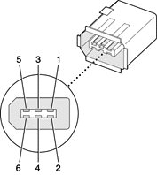

Each FireWire port has a connector with six pins, as shown in Figure 3-2. The connector signals and pin assignments are shown in Table 3-2.
Figure 3-2 FireWire connector
The power pin provides up to 15 W total power for all three FireWire connectors. The voltage on the power pin can be from 18 to 25 V.
Pin 2 of the FireWire connector is ground return for both power and the inner cable shield. In a FireWire cable with a 4-pin connector on the other end, the wire from pin 2 is connected to the shell of the 4-pin connector.
The signal pairs are crossed in the cable itself so that pins 5 and 6 at one end of the cable connect with pins 3 and 4 at the other end. When transmitting, pins 3 and 4 carry data and pins 5 and 6 carry clock; when receiving, the reverse is true.